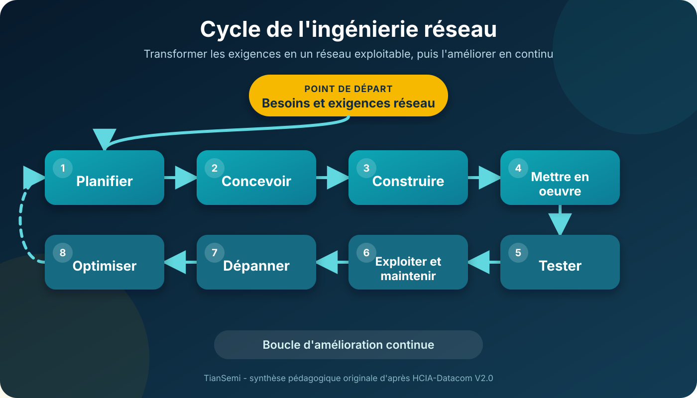
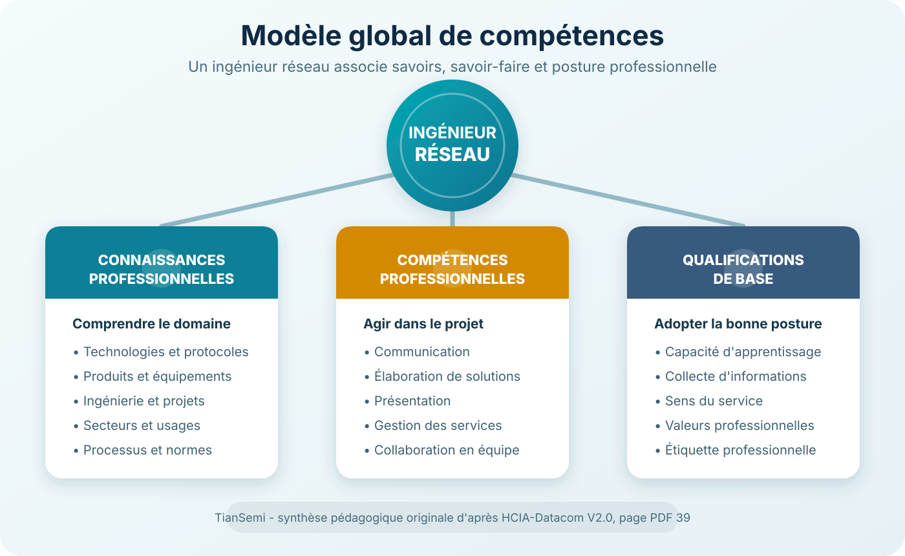
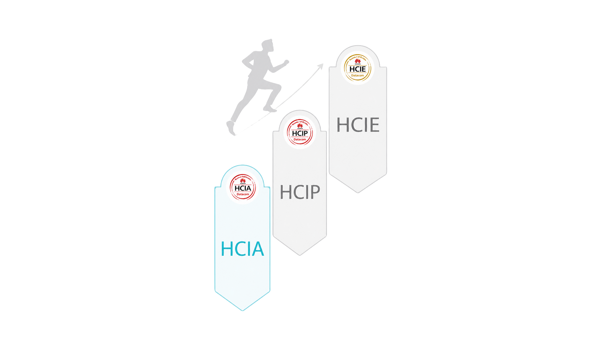

Huawei HCIA-Datacom · Unité 1.1.4
Ingénierie réseau : du besoin au métier.
Un réseau professionnel n’est pas une accumulation d’équipements. C’est une solution planifiée, conçue, déployée, testée et améliorée par des ingénieurs capables d’associer technique, projet et communication.

1. Qu’est-ce que l’ingénierie réseau ?
L’ingénierie réseau regroupe les activités de planification, de conception, de mise en œuvre, de test et de dépannage centrées sur les réseaux.
Elle part des besoins des applications, respecte des standards techniques, puis intègre matériels, logiciels et technologies afin de construire un système répondant aux attentes de l’utilisateur avec un rapport coût-efficacité maîtrisé.
Un domaine très étendu
- Applications
- Stockage
- Sécurité
- Calcul informatique
- Sans-fil
- Routage
- Commutation
- Salles techniques
- Supports de transmission
Le routage et la commutation constituent les fondations des réseaux informatiques : la commutation organise principalement les échanges dans le réseau local, tandis que le routage relie les différents réseaux.
2. Que fait un ingénieur réseau ?
L’ingénieur réseau ne se limite pas à la configuration des équipements. Il conduit une partie du projet, coordonne les parties prenantes et sécurise la livraison.
- Analyser les exigences du client et les contraintes de l’environnement.
- Élaborer un plan de mise en œuvre et un calendrier réaliste.
- Faire valider la solution par les parties prenantes.
- Mobiliser les ressources nécessaires au projet.
- Assurer une livraison de qualité dans les délais.
- Former les utilisateurs et remettre la documentation d’ingénierie.
3. Le modèle global de compétences
Huawei structure le profil de l’ingénieur réseau autour de trois dimensions complémentaires. La technique seule ne suffit pas à conduire un projet et à travailler efficacement avec les autres acteurs.

4. Progresser du concept vers l’ingénierie
Le parcours technique va de la vue d’ensemble vers les mécanismes détaillés, puis revient à une vision globale permettant de planifier, construire, maintenir et optimiser le réseau.
| Niveau | Question directrice |
|---|---|
| Quoi ? | Que sont le routage et la commutation ? |
| Comment ? | Comment configurer, vérifier et interroger OSPF ? |
| Mécanisme | Comment les voisinages OSPF sont-ils établis ? |
| Paquets | Comment le protocole fonctionne-t-il dans les paquets ? |
| Cycle d’ingénierie | Comment planifier, concevoir, déployer, maintenir, dépanner et optimiser ? |
OSPF signifie Open Shortest Path First. Il sert ici d’exemple de progression et non de sujet de configuration détaillée.
5. Le parcours Huawei Datacom
Le système de certification fournit une progression structurée selon le niveau de connaissances et les capacités de déploiement.

Révision TianSemi
6 flashcards pour vérifier votre compréhension
Essayez de répondre avant d’ouvrir chaque carte. Utilisez ensuite le quiz bilingue pour passer d’une restitution libre à une évaluation guidée.
Planification, conception, mise en œuvre, tests et dépannage des réseaux.
- Connaissances professionnelles : protocoles, produits, ingénierie et secteur.
- Compétences professionnelles : communication, solutions, services et collaboration.
- Qualifications de base : apprentissage, collecte d’informations, service et savoir-être.
L’ingénieur comprend d’abord le rôle général d’une technologie, étudie son utilisation, sa configuration, ses mécanismes et ses paquets, puis réutilise ces détails pour concevoir et exploiter un réseau complet.
La commutation assure principalement les échanges au sein du réseau local, tandis que le routage permet la communication entre différents réseaux.
HCIA valide les fondamentaux, HCIP des connaissances avancées et des compétences de déploiement, et HCIE une base théorique solide avec le déploiement de solutions interdomaines.
Analyse des exigences, planification, conception, sélection des technologies, mise en œuvre, tests, exploitation, maintenance, dépannage et optimisation.
Passer au quiz bilingue
Les mêmes objectifs sont disponibles sous forme de questions à choix en français et en anglais.
Références
Cette ressource est une synthèse pédagogique originale TianSemi fondée sur le Huawei HCIA-Datacom V2.0 Training Material, pages PDF 37 à 45. Les schémas publiés sur cette page sont des créations TianSemi.